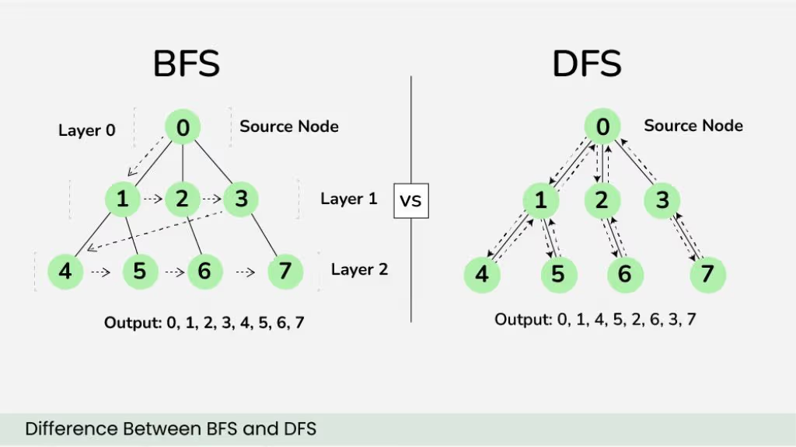

Como usar o Mkdocs e Material for MkDocs
Esta página tem como objetivo ensinar como editar o site com o MkDocs e como usar os recursos do Material for MkDocs.
O MkDocs é um gerador de sites estáticos rápido e simples, sem a necessidade de HTML, CSS ou Javascript (apesar de permitir o uso desses recursos), usando apenas Markdown. Além disso usamos o tema Material for MkDocs, que torna o site mais agradável e personalizável.
Referências
Estrutura do Site
No repositório você encontrará diversos arquivos e pastas. Os mais importantes são descritos abaixo.
Pasta docs
Onde estão os arquivos Markdown que serão convertidos em HTML. Aqui é onde você cria e edita as pastas de fato. A estrutura interna dessa pasta não afeta o funcionamento do site diretamente.
Aquivo mkdocs.yml
É o arquivo mais importante do site. Onde estão as configurações do site, como o tema, a cor de fundo, plugins, etc.
Também é aqui que encontra o nav, que define como o site mostra os menus do site.
Arquivo requirements.txt
É o arquivo que define as dependências do site, como a biblioteca Markdown.
Você pode baixar as dependências com o comando:
Você também pode atualizar as dependências com o comando:
O Que o Markdowm Permite?
Títulos
//# Título 1 //## Título 2
Aqui os títulos 1 e 2 foram emitidos pois quebrariam a estrutura da página.
Título 3
Título 4
Parágrafos
Este é um parágrafo.
Este é outro parágrafo.
Negrito e Itálico
texto
texto
Listas
- Item 1
- Item 2
- Item 3
Listas numeradas
- Primeiro
- Segundo
- Terceiro
Links
Links Externos
Links Dentro do Site
Links Dentro da Página
Imagens

Código
Inline
Use a função sort.
Blocos
Matemática
Avisos
Note
Esta é uma observação.
Tip
Dica importante.
Warning
Cuidado com overflow.
Danger
Esta solução gera TLE.
Exemplos recolhíveis
Example
Esta é uma solução alternativa.
Tabelas
| Estrutura | Inserção |
|---|---|
| Set | O(log N) |
| Vector | O(1) |
Diagramas
O tema Material suporta Diagramas Mermaid.
graph TD
A[Start]
A --> B[Read Input]
A --> E[Alternative]
B --> C[Process]
C --> D[Output]